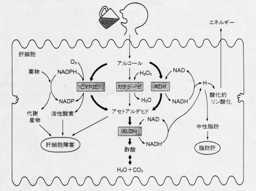
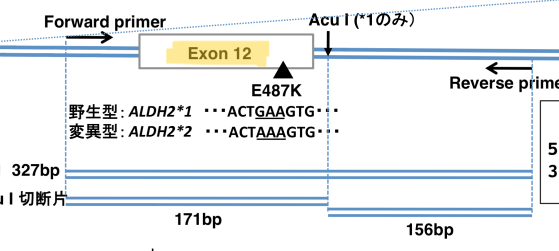

[総論（酵素学）]
【問】正しいものを選べ。(2025年 問1)
解説
bが明らかに正解。
元素は現時点で100ちょい、不対電子は共有結合。
【問】右の図に示す官能基は何か。 (2025年 問2)

解説
dが正解。
【問】異性体について正しいものをすべて選びなさい (2025年 問3)
解説
正解はc, d. e。
構造異性体：分子式が同じ（結合が異なる）
立体異性体：鏡像異性体（不斉炭素原子など）とジアステレオマー（シストランス異性体など）
鏡像異性体は、ほとんどの性質が同じだが旋光性と一部の反応性のみ異なる。
【問】正しいものを選べ (2025年 問4)
解説
正解はc。
天然の単糖のほとんどはD型。
人間はβ(1,4)グリコシド結合（アガロース、セルロース、キチン、グルコマンナン）を分解できない。
【問】酵素と（・・・）正しいものを選べ。 (2025年 問5)
解説
正解はa。
多くの酵素は補因子が必要で、強く長期に結合する補因子を補欠分子族と呼ぶ。
競合阻害：基質に似た阻害剤が、活性中心に競合して結合（見かけのKmが増加、Vmaxは不変）
非競合阻害：阻害剤が、酵素の働きに重要な官能基に結合し、酵素活性を低下（見かけのVmaxが減少、Kmは不変（a = a’の場合））
不競合阻害：阻害剤が、酵素-基質複合体に結合し、活性中心の構造を変化させる（見かけのVmaxとKmがともに減少）
逸脱酵素：疾患部位の同定と、経過・重症度・予後のマーカーとして働く。
- AST・ALT：肝疾患
- アミラーゼ・リパーゼ：急性膵炎、胆道閉鎖
- CK：筋ジストロフィー、心筋梗塞
- ALP：骨疾患、骨腫瘍
[糖代謝]
【問】以下の記述から誤りを1つ選べ (2025年 問6)
解説
正解はd。過去問通り。
【問】この化合物はなにか (2025年 問7)

解説
正解はb。
乳酸を脱水素するとピルビン酸。
【問】ATPを合成する反応を答えなさい (2025年 問8)
解説
正解はbとd。過去問通り。
【問】次の文章のうち、正しいものはどれか。１つ選べ。 (2025年 問9)
解説
正解はb。
糖新生は解糖系の逆行だけど、解糖系の不可逆反応を迂回しないといけないので、ATPも酵素もさらに必要。
糖新生の主原料は乳酸、アミノ酸、グリセロールで、脂肪酸はアセチルCoAになって色々使えるけど糖新生はできない。
糖新生は肝臓と腎臓だけ。
【問】ペントースリン酸回路で産生されるものとして適切なものを下記からすべて選びなさい。 (2025年 問10)
解説
正解はaとc。
ペントースリン酸回路は、脂肪酸合成のためのNADPHの生成と、核酸合成のためのリボース5-リン酸の生成を行う。
【問】誤っているものを選べ。(2025年 問11)
解説
正解はd。過去問寄り。
血糖値を下げるのはインスリン（グリコーゲン合成酵素活性化（脱リン酸化）、解糖系促進、糖新生抑制）。
血糖値を上げるのは、
-グルカゴン（グリコーゲン合成酵素不活化（リン酸化）、解糖系（ピルビン酸キナーゼ）抑制、糖新生促進）。
-アドレナリン（グリコーゲン合成酵素不活化（リン酸化））。
-コルチゾール（糖新生促進）。
ほか関連項目：
フルクトース2,6-ビスリン酸：代謝中間体、解糖系を活性化する
グルコキナーゼ（ヘキソキナーゼIV）：解糖系第一反応、血糖値の低い時は肝臓で細胞質から核内に移行し、解糖系を抑制する
【問】ケトン体について、正しいものを全て選びなさい (2025年 問12)
解説
正解はa, b, c, e。
脳の栄養はグルコースが第一、それがだめならケトン体。
【問】正しいものを選べ (2025年 問13)
解説
正解はa。
正しくは、
電子伝達系-ミトコンドリア内膜
ケトン体合成-ミトコンドリアマトリックス
【問】電子伝達系について誤っているものを答えよ。 (2025年 問14)
解説
正解はd。
NADHから電子を受け取るのは複合体1。
複合体2（コハク酸脱水素酵素）は、クエン酸回路より、コハク酸由来のFADH2から電子を受け取る。
【問】糖原病Ⅰa型（von Gierke）の所見として正しいものを次のうちから選べ。 (2025年 問15)
解説
正解はd。
他には低身長も1a型の特徴。
【問】Mitochondriaについて次の文章のうち、正しいものを選べ。 (2025年 問16)
解説
正解はe。
ほか関連項目：
特徴的な症状は、中枢神経症状、高乳酸値、赤色ぼろ線維。
基質の転送障害は主にアシルCoAの転送障害。
【問】脂肪酸合成において重要なミトコンドリアの内膜上にある輸送体を一つ選べ。 (2025年 問17)
解説
正解はe。
モノカルボン酸輸送体：ピルビン酸、短鎖・中鎖脂肪酸のβ酸化
ジカルボン酸輸送体：リンゴ酸=糖新生
トリカルボン酸輸送体：クエン酸=脂肪酸合成
[脂質代謝]
【問】「必須脂肪酸（狭義）」となる正しい選択肢を選べ (2025年 問18)
解説
正解はb。
アラキドン酸は広義の必須脂肪酸。
【問】HDLに取り込まれたコレステロールを脂肪酸でアシル化し、コレステロールエステルを形成する反応を触媒する酵素は次のうちどれか。正しいものを1つ選べ。 (2025年 問19)
解説
正解はa。
LCAT（レシチン コレステロール アシル トランスフェラーゼ）
【問】LDL受容体に特徴的なもの (2025年 問20)
解説
正解はc。
LDL受容体はアポB100とアポEと特異的に結合する。
アポC2はLPL（リポタンパク質リパーゼ、トリグリセリドの分解を行う）の活性化
【問】長鎖脂肪酸のβ酸化における律速段階として正しいものはどれか。1つ選べ。 (2025年 問21)
解説
正解はb。
いわゆるカルニチンシャトルが律速段階。
【問】脂肪酸生合成について、アセチルCoAからマロニルCoAへの反応を触媒し、ビオチンを補酵素とする酵素を選べ (2025年 問22)
解説
正解はd。
コレステロールの生合成ではHMG-CoAレダクターゼなので混ざらないように。
【問】スタチンの作用を答えなさい (2025年 問23)
解説
正解はb。
スタチンは高脂質症の治療薬で、HMG-CoAレダクターゼを競合阻害してコレステロールの生合成を抑制する。
家族性高コレステロール血症や治療抵抗性の患者には、スタチン＋PCSK9阻害剤。
[ビタミン]
【問】アラニンをピルビン酸にする時に使われるビタミンはどれか。適切なものを一つ選びなさい。 (2025年 問24)
解説
正解はd。
ビタミンB6はアミノ基転移酵素の補酵素で、主に糖新生に関与する。
【問】妊娠中に投与することで胎児の奇形を及ぼすものを一つ選べ. (2025年 問25)
解説
正解はe。過去問通り。
葉酸は不足で神経管閉鎖障害（胎児奇形）を起こす。
【問】ビタミンの欠乏症として正しい組み合わせを全て選べ (2025年 問26)
解説
正解はa, b, c, e。
壊血病（コラーゲン形成不全による出血傾向）はビタミンC。
【問】ビタミンEに関する記述として正しいものを選べ。 (2025年 問27)
解説
正解はd。
2はビタミンB12、3はビタミンA、5はビタミンE。
【問】ビタミンKが補酵素であるγ-グルタミルカルボキシラーゼの修飾において重要なものを全て選べ。 (2025年 問28)
解説
正解はa, c, d。
カルシウムイオンと結合したいやつを選ぶ（血液凝固、骨形成）。
[先天性疾患・遺伝病]
【問】正しい選択肢を選びなさい (2025年 問29)
解説
正解はa。過去問寄りの新問。
T2T-CHM（テロメア-to-テロメア・・・）は反復配列の決定にロングリードシーケンシング（全ゲノム解析）が必要。
BRCA1/2は乳癌・卵巣癌のリスクとなる変異なので誤り。
エクソーム解析（ショートリード）でも、GC含有量の多い領域や反復配列は解析が難しい。
【問】（再現不十分） (2025年 問30)
【問】NMD (Nonsense mediated mRNA decay)について正しいものを選びなさい。 (2025年 問31)
解説
正解はb。ナンセンス変異の修復に関する新問。
リボソームがPTCを認識して、mRNAの分解が始まる。
ざっくり言うとPTCより後ろに新しいエクソンがない場合は見逃されやすい。
【問】次のうち、常染色体潜性遺伝について正しいものを選べ (2025年 問32)
解説
正解はb。落ち着いて考えれば大丈夫。
【問】父親から息子に引き継がれることはない遺伝子形式を次の中から選べ (2025年 問33)
解説
正解はb, c, d。落ち着いて考えれば大丈夫。
【問】機能喪失バリアントで優性阻害効果になるものを選べ (2025年 問34)
解説
正解はa。細かいところを聞いてきた新問。
ハプロ不全 例：ワーデンブルグ症候群1型（PAX3遺伝子）
優性阻害効果 例：骨形成不全症（COL1A1遺伝子）
【問】誤っているものを選べ (2025年 問35)
解説
正解はe。新問？
脊髄性筋萎縮症は、治療法（スピンラザ、ゾルゲンスマ）が確立されたから診断法（新生児スクリーニング）が発展したらしい。
2024年に遺伝子検査が見直され、病気の生化学で勉強した疾患のほとんどが保険で遺伝子検査が可能。（レジュメ参照）
Tay-Sachs病はライソゾーム病で、アシュケナージ系ユダヤ人に多い（保因者は約30人に1人）。
2〜4歳で死亡する重篤な疾患で治療法がないので保因者スクリーニングが進んでいる。
[エピジェネティクス]
【問】正しいものを選べ。 (2025年 問36)
解説
正解はd。過去問通り。
[病気の生化学]
【問】常染色体潜性の疾患を選べ (2025年 問37)
解説
正解はd。過去問通り。
【問】正しいものを選べ。 (2025年 問38)
解説
正解はa。
メープルシロップ尿症は、血中ロイシン濃度を治療域に保つことが重要である。
テトラヒドロビオプテリン欠損症は、フェニルアラニン制限食、葉酸・テトラヒドロビオプテリン摂取で治療可能である。
ホモシスチン尿症は、水晶体脱臼が特徴的な症状のひとつである。
【問】次の選択肢から正しいものを選べ (2025年 問39)
解説
正解はa, e。
aはおそらくレッシュ・ナイハン症候群（ヒポキサンチングアニンホスボシルトランスフェラーゼの欠損）に関する問題だが、アデニンホスホリボトランスフェラーゼもプリン塩基の再利用に関わるので〇。
急性間欠性ポルフィリン症では、尿中の δ-アミノレブリン酸（ポルフォビリノーゲン）が増加する。
オルニチントランスカルバミラーゼ欠損症では、高アンモニア血症が起きる。
色素性乾皮症の群では、ヌクレオチド除去修復に異常がみられる。
【問】正しいものを選べ。 (2025年 問40)
解説
正解はe。
副腎白質ジストロフィーは、極⻑鎖脂肪酸のペルオキシソームへの移送が傷害される。
鎌状赤血球症は、ヘモグロビンβ鎖の変異により生成された異常ヘモグロビンが凝集する。
グルコーストランスポーター1 欠損症では、脳への糖輸送が出来ず、髄液糖は低値になる。
【問】正しい選択肢を答えよ。 (2025年 問41)
解説
正解はd。
インスリン依存性糖尿病の病態として、糖新生は促進されている。
ウィルソン病では、銅の組織沈着により肝機能障害や様々な神経障害になる。
[タンパク質分解と疾患]
【問】レニン-アンジオテンシン系におけるタンパク質分解の意義として正しいものはどれか。 (2025年 問42)
解説
正解はa。
タンパク質の限定分解による機能制御として、レニン-アンジオテンシン系、アポトーシス（Caspase3）、血液凝固（トロンビン）、血液線溶（プラスミン）が挙げられた。
（再現不十分、過去問？） (2025年 問43)
【過去問】間違っているものを選べ。
解説
正解はd。E3のRINGドメインはE2をリクルートする。
【過去問】ATPを消費する反応を全て選べ。
解説
正解はa, c, d。ユビキチン・プロテアソームによる分解と、リン酸化（ATPの末端リン酸基を標的タンパク質に転移）。
【過去問】シグナル伝達においてユビキチンシステムを必要とするものはどれか。
解説
正解はc。ユビキチン化が必要なのはNFkB経路、wnt経路。
【問】リソソームに関する記述に関して正しいものを全て選べ (2025年 問44)
解説
正解はa, c, e。
リソソームはユビキチンプロテアソーム系には関わらない。オートファジーに関わる。
オートファジーは細胞質の一部をオートファゴソームで隔離し、リソソームに送って消化させるプロセスなので、核内タンパクのみは間違い。
【問】オートファジーについて正しいものを選べ (2025年 問45)
解説
正解はc。
オートファゴソームによる標的タンパク質の隔離が必要。
リン酸化が必要なのはユビキチンプロテアソームシステム。
オートファジーは長寿命タンパク質（分解されにくいタンパク質）の分解も担う。
【問】細胞周期制御におけるユビキチンの役割について正しいものを選べ。 (2025年 問46)
解説
正解はb。
ユビキチン修飾はプロテアソームによる分解の目印。
ユビキチンはタンパク質と共有結合する。
ユビキチンは細胞周期に何回も関わる（S期の開始時やM期の終了時）。
細胞周期関連タンパク質（サイクリン、CKIなど）はユビキチン修飾による分解制御を受ける。
腫瘍の生化学
【問】がんの特徴について正しいことを選べ。 (2025年 問47)
解説
正解はe。過去問で行けそう。
【問】多段階発癌の特徴について正しいものを答えよ (2025年 問48)
解説
正解はb。
有利な形質を得た細胞がクローン性増殖し、さらに異なる変異を持つ集団が生まれて腫瘍内不均一性が生まれる。
【問】がんのRAS遺伝子について正しいものを答えよ。 (2025年 問49)
解説
正解はc。
Rasは受容体に共役するGタンパク質で、活性化にはGEFが必要。GAPはGTPを分解してRasを不活化する。
Rasの役割は、細胞膜近傍でのシグナル伝達。
【問】がんにおけるRb(Retinoblastoma)とp53の記述について正しいものを一つ選べ。 (2025年 問50)
解説
正解はb。
Rbとp53はがん抑制遺伝子で、Rbは細胞周期のブレーキ、p53はDNA損傷時に細胞周期の停止、細胞死誘導をする。
どちらも核内でDNAや転写因子に作用する。
【問】融合遺伝子について正しいものを選べ (2025年 問51)
解説
正解はe。
融合遺伝子は、主に1回の転座によって、別々の遺伝子がくっついてできるもの。
BCR-ABL（白血病）など、主にがん遺伝子であり、がんの発生原因（ドライバー変異）になりやすい。
【問】がんにおけるWarburg効果において正しいものを選べ。 (2025年 問52)
解説
正解はb。
酸素があっても嫌気性解糖を行うのがWarburg効果。
解糖系はスピードが速いので、大量のグルコースを消費して炭素骨格などを手に入れることが出来る。
【問】がんにおけるHIF-1αの働きについて正しいものを選びなさい。 (2025年 問53)
解説
正解はb。
HIF-1αは低酸素状態の血管新生シグナル。
がん細胞の増殖に酸素や栄養が追いつくために、代謝を亢進する。
[ncRNA]
【問】siRNA、miRNA、piRNAに関する記述のうち、誤っているのはどれか (2025年 問54)
解説
正解はa, d。
aはmiRNA、dはpiRNAの説明。
Dicerによって切断されるのはsiRNAかmiRNAだが、翻訳抑制（遺伝子発現制御）がメインなのはmiRNA（siRNAは異常に対する防御機構）。
PiwiファミリーはpiRNAと結合する。
【問】小分子RNAと個体発生について正しいものを選べ。 (2025年 問55)
解説
正解はd。
小分子RNAの基本の働きはmRNAの分解による発現（翻訳）抑制。
発生においても、転写後の制御をmiRNAが担う。
[アミノ酸代謝]
【問】非極性側鎖を持つアミノ酸の中で必須アミノ酸酸でないものはどれか (2025年 問56)
解説
正解はa。
バリン、イソロイシン、トリプトファンは必須アミノ酸なので✕。
グルタミンは無電荷の極性側鎖を持つアミノ酸なので✕。
【問】誤りを一つ選べ (2025年 問57)
解説
正解はd。
体内のアミノ酸プールは体重に依存し、必要以上のアミノ酸は分解・排出される。
【問】正しいものを一つ選びなさい。 (2025年 問58)
解説
正解はd。新問？
プロ酵素として分泌しないと、分泌前に自食が起きてしまう。
余剰アミノ酸は分解・排出される（アンモニアは尿素として）。
タンパク質分解は、ユビキチンプロテアソームがエネルギーを消費する。
アミノ酸輸送体の欠陥ではシスチン尿症が起きる。
【問】正しいものを一つ選びなさい。 (2025年 問59)
解説
正解はb。新問？
ユビキチンプロテアソーム系を指す。
調節タンパク質（酵素など）は短命、構造タンパク質は長命。
タンパク質の代謝に重要なのは、アミノトランスフェラーゼが含むビタミンB6（ピリドキサールリン酸（PLP）の材料）。
リン酸化されるとユビキチン化を促進することがある。
【問】正しい選択肢を選べ (2025年 問60)
解説
正解はb, e。過去問寄り。
細胞外液の遊離アミノ酸濃度は体細胞中よりも低い
→能動輸送系が細胞外から細胞内にアミノ酸を輸送する（欠陥でシスチン尿症）。
【問】誤っているものを一つえらべ。 (2025年 問61)
解説
正解はd。過去問通り。
オルニチン+カルバモイルリン酸→シトルリン。
【問】正しいものを選びなさい。 (2025年 問62)
解説
正解はa。過去問寄り。
尿素の第一アミノ基は遊離アンモニア、第二アミノ基はアスパラギン酸から供給される。
尿素回路：
ミトコンドリアでの反応
1. アンモニア→カルバモイルリン酸（カルバモイルリン酸シンターゼⅠ）
2. オルニチン+カルバモイルリン酸→シトルリン
細胞質での反応
3. シトルリン+アスパラギン酸→アルギニノコハク酸（アルギニノコハク酸シンターゼ）
4. アルギニノコハク酸→フマル酸+アルギニン（アルギニノコハク酸リアーゼ）
5. アルギニン→尿素+オルニチン
ヌクレオチド代謝
【問】正しいものをすべて選べ。 (2025年 問63)
解説
正解はa, d。過去問寄り。
プリン環は前もって合成されたリボース-5-リン酸に炭素と窒素を付加する。
プリンのde-novo 経路で最初に合成される誘導体はイノシン一リン酸である。
グルタミンとPRPPからホスホリボシルアミンができる。
【問】正しいものをすべて選べ。 (2025年 問64)
解説
正解はa, b, c, d, e。過去問寄り。
アデニロコハク酸シンターゼがAMPによって阻害される。
IMP デヒドロゲナーゼがGMPによって阻害される。
IMPのde-novo 合成ではATPが5回必要である。
なども問われるかも。
【問】間違っているものを全て答えなさい。 (2025年 問66)
解説
正解はa, b, c, d, e。過去問寄り。
プリン塩基が分解されると最終的に尿酸になる。
アデニンからAMPを作るとき、リン酸基はPRPPから供給される。
ヒポキサンチングアニンホスホリボシルトランスフェラーゼ（HGPRT）は、活性が低下するとレッシュ・ナイハン症候群を発症する。
プリン合成のサルベージ経路は種によって異なる。
ピリミジン合成にサルベージ反応はある。
【問】ピリミジンヌクレオチド合成について正しい物を全て選べ (2025年 問67)
解説
正解はa, b。過去問寄り。
ピリミジンのde-novo 経路で最初に合成される誘導体はオロチジン一リン酸であり、すぐに代謝されウリジン一リン酸になる。
尿素合成のカルバモイルリン酸シンターゼⅠは、ビリミジンヌクレオチドの合成のカルバモイルリン酸シンターゼⅡと別である。
UMP合成は、ATP, PRPPにより活性化され、UTPによって阻害される（N-アセチルグルタミン酸は尿素合成を調節）。
【問】正しいものを全て選べ。 (2025年 問68)
解説
正解はa, b, c, d, e。過去問寄り。
【問】次のうち正しいものを選べ。 (2025年 問69)
解説
正解はb, d。過去問寄り。
デオキシリボヌクレオチド合成の律速酵素はリボヌクレオチドレダクターゼ（RNR）である。
RNRが活性を示すのはR1サブユニット2つとR2サブユニット2つからなる四量体のときのみである。
dUMP はチミジル酸シンターゼによってdTMPになる。
[細胞老化]
【問】適切なものを全て選べ (2025年 問71)
解説
正解はa, c, d。過去問寄り。
細胞老化の表現型は不可逆的である。
テロメアーゼ活性は生殖細胞と癌細胞でみられる。
[空腹と摂食]
【問】糖新生する臓器、組織を全て選べ (2025年 問72)
解説
正解はc, d。過去問通り。
【問】正しいものを選べ。 (2025年 問73)
解説
正解はe。新問？
metabolism：代謝。ギブズエネルギーを取り出して、利用していく過程。
catabolism：異化。栄養物や細胞成分を、再利用またはエネルギーにするために、分解する過程。
（cataが「壊す」という意味。）
anabolism：同化。簡単な物質から生体分子を合成する過程。
（anaが「上げる（合成）」という意味。）
【問】絶食時におけるエネルギー燃料はどれか。 (2025年 問74)
解説
正解はa, c, d。
（初期（数時間）：肝臓のグリコーゲンを分解）
中期（数日）：筋肉のタンパク質を分解→アミノ酸から糖新生
長期（数週間以上）：脂肪組織を分解→脂肪酸からケトン体合成、グリセロールから糖新生
[ヘム・ポルフィリン]
【問】ヘムの合成が特に活発な臓器、組織をすべて選べ。 (2025年 問75)
解説
正解はa, d。
80%が赤芽球、20%が肝臓。
【問】ヘムの代謝経路でできる産物で緑色を示すものを選べ。 (2025年 問76)
解説
正解はa。
ヘム→ビリベルジン（緑色）→ビリルビン（黄橙色）
腸管へ：→ステルコビン（濃赤褐色）
腎臓へ：→ウロビリン（黄色）
【問】ヘモグロビンについて正しいものを全て選べ (2025年 問77)
解説
正解はb, d。
酸素結合曲線はシグモイド型。ミオグロビンは双曲線型。
ヘモグロビンは4量体構造（α2β2）で4つのヘムを持つ。
主な役割は酸素の運搬。ミオグロビンは貯蔵もする。
[解析法]
【問】間違っているものを選びなさい。 (2025年 問78)
解説
正解はc。
blottingは、目的のDNA配列の存在や分子量を確認する解析法。
サザン（DNA）、ノザン（RNA）、ウエスタン（タンパク質）
【問】間違っているものを選べ (2025年 問79)
解説
正解はb？
CRISPR-Cas9、Cas13は切断するのでノックアウト法。
CRISPRi、RNAiはinterference（阻害する）のでノックダウン法。
遺伝子導入法は、レンチウイルスベクター法が、ゲノムに組み込まれ安定的な発現が可能なので最も重要。
【問】間違いを選べ (2025年 問80)
解説
正解はc。
リン酸化はリガーゼ。
【問】誤り選べ (2025年 問81)
解説
正解はd。細胞培養・解析について。
細胞株は不死化した細胞。
初代培養は組織から取得し一定期間培養可能な細胞。
オルガノイドは臓器の構造や機能を模倣した3次元組織。
フローサイトメトリーは細胞1個1個の特徴を解析する。
FACSはフローサイトメトリーと並行して特定細胞の分離が可能。
【問】正しいものをすべて選びなさい。 (2025年 問82)
解説
正解はa, c, e。
ゲル濾過では、大きい分子がゲルの穴に吸着しにくいので早い。
電気泳動では、小さい分子がゲルの網目を通りやすいので早い。
【問】タンパク質の酵素活性を検出する方法をすべて選べ (2025年 問83)
解説
正解はe。
濃度測定：分光光度計、CBB染色
アミノ酸配列決定：エドマン分解法
立体構造解析：X線結晶構造解析、NMR、クライオ電子顕微鏡
分子量・発現量：ウエスタンブロッティング、MS解析
発現部位：免疫染色
酵素活性：ザイモグラフィー
【問】タンパク質の可溶性について、その特性と可溶剤の組み合わせとして正しいものを全て選べ。 (2025年 問84)
解説
正解はa, c, e。
界面活性剤：疎水性部分をブロックして親水性に変換する
塩：電荷を中和して溶出させる
還元剤：ジスルフィド結合を切断する。
[リン酸化と修飾]
【問】リン酸化されるアミノ酸を答えなさい。 (2025年 問85)
解説
正解はa, b, d。
一般的にはセリン(S)・トレオニン(T)・チロシン(Y)。
講義中に話してたしレジュメにもあるのでヒスチジン(H)も含めていいと思う。
【問】タンパク質リン酸化について正しいものを全て選べ (2025年 問86)
解説
正解はa, c, e。
リン酸基を付加するのはATP。
SH2ドメインはリン酸チロシンを認識する。14-3-3ドメインがリン酸化セリンを認識する。
[シグナル伝達]
【問】ウイルスに感染した細胞が近隣細胞に抗ウイルスシグナルを伝達する形式を答えよ。 (2025年 問87)
解説
正解はb。
周りに知らせることで局所的に反応を起こさせる（免疫反応、創傷治癒）。
【問】正しいものを全て選べ (2025年 問88)
解説
正解はb, e。
Gタンパク質はGTPが結合すると活性化、GDPが結合する（GTPaseで分解される）と不活性化。
アデニル酸シクラーゼ経路：cAMPを生成してPKAを活性化。
ホスホリパーゼ経路：IP3が小胞体からCa2+を放出させ、PKCを活性化。
【問】TGFβの作用を抑制するのはどれ？ (2025年 問89)
解説
正解はd。
TGFβシグナルでは、SMAD2/3が特異型SMAD、SMAD6/7が抑制型SMAD。
BMPシグナルでは、SMAD1/5/8が特異型SMAD。
【問】NF-κB回路について正しいものを全て選びなさい。 (2025年 問90)
解説
正解はc。
NF-κBは、細胞質内でp65/p50等のヘテロ二量体を形成し、IκBと結合して不活性な状態で存在。
刺激により、IKKがIκBαをリン酸化→ユビキチン化→分解され、NF-κBが核内へ移行。
阻害薬はステロイド。
【問】7回膜費通Gタンパク共役型の受容体遺伝子の異常により発症する疾患はどれか。 (2025年 問91)
解説
正解はc。
甲状腺刺激ホルモン受容体異常：甲状腺機能亢進症（甲状腺腫）
V2バソプレッシン受容体異常：伴性腎性尿崩症
ロドプシン受容体異常：網膜色素変性症
Gタンパク質（受容体ではない）異常：偽性副甲状腺機能低下症、McCune-Albright 症候群
[活性酸素とラジカル]
【問】スーパーオキシドジスムターゼ(SOD)が、2分子のO²・を基質として反応したときの反応式を選べ (2025年 問92)
解説
2O₂’⁻+2H⁺→ H₂O₂+O₂
スーパーオキシドを過酸化水素に分解する（電子を過酸化水素と酸素に不均一分配する）。
【問】虚血性心疾患の患者が冠動脈再灌流療法を行った。再灌流直後に心筋障害が増悪した。原因として最も考えられるものは何か。 (2025年 問93)
解説
正解はb。
ROSの平常時の発生源は、ATP産生（電子伝達系）、殺菌作用（NADPHオキシダーゼ）、薬物代謝。
増強要因は、糖尿病、動脈硬化・心筋梗塞。
【問】ビタミンE(トコフェニロール)脂質過酸化のラジカル連鎖反応が停止した後、トコフェロキシラジカルとなる。これを還元して再生するビタミンは？ (2025年 問94)
解説
正解はb。
ビタミンEは脂質過酸化防止、ビタミンCはビタミンEの再生・補助を行う。
[遺伝子発現制御]
【問】末梢血で、小血球性低色素性貧血を認めた。遺伝子検査で、ヘモグロビン β 鎖の Kozak 配列の+4 位で G→C 変異を認めた。この変異における変化で最も適切なものを選べ (2025年 問95)
解説
コザック配列：開始コドン周辺の重要配列、翻訳効率を高める。
コザック配列の変異により、β鎖の生成が減少または停止するとサラセミアになる。
【問】オミックス解析について正しいものをすべてえらべ。 (2025年 問96)
解説
正解はa, e。過去問通り。
ゲノム解析：全遺伝子を網羅的に解析
エピゲノム解析：DNAの修飾状態を解析（エピジェネティクス）
トランスクリプトーム解析：全mRNAの発現パターンを解析（transcript＝転写＝mRNA）
プロテオーム解析：全タンパク質の機能・相互作用を解析（protein＝タンパク質）
メタボローム解析：代謝物質を網羅的に解析（metabolites＝代謝物質）
マルチオミクス解析：複数のオミクスデータを統合してAIで学習、疾患メカニズム解明や個別化医療、創薬に応用
[糖鎖の生化学]
【問】N-結合型タンパク質において、アミノ酸残基のまわりの配列で正しいものはどれか (2025年 問97)
解説
正解はa。
N-結合型：アスパラギン残基に結合
（どのアスパラギンでも良いわけではなく、Asn-X-Ser/Thrというコンセンサス配列が必要）
O-結合型：セリン・スレオニン残基に結合
【問】O結合糖鎖について正しいものを選べ (2025年 問98)
解説
正解はb, c, d, e。細かい新問。
糖ヌクレオチド：
- GDP-Man：N結合型糖タンパク質中につねに存在する。
- UDP-GlcNAc：多くの核タンパク質ではSerやThrのOHにGlcNACが単一の糖として付いている。
- UDP-Xyl：キシロースは多くのプロテオグリカン中のSerのOH基に結合し、二つのガラクトースと結合して橋渡し三糖を形成している。
修飾：
- N-グリコシル化：粗面小胞体（、ゴルジ装置）。ドリコールリン酸が多糖鎖の組み立てと転移に関与。
- O-グリコシド化：ゴルジ装置。特定のタンパク質（ムチン、血液型抗原、コラーゲン、プロテオグリカン）のみ。
[生体異物の代謝]
【問】正しいものを全て選びなさい (2025年 問99)
解説
正解はa, b。
シトクロムP450が働くのは第1相。
第2相は生体内極性成分を結合させて水溶性を高める。
第1相反応の速度は、第2相反応に比べて一般に遅い（律速反応）。
【問】薬理遺伝学について正しい記述をすべて選べ (2025年 問100)
解説
正解はc, d, e。新問？
DNAの多型、主に塩基多型とコピー数多型を対象にする。
薬剤応答の個人差に関する研究で、人口の1％以上に存在するありふれたバリアントが対象（稀なやつは個人差の程度ではないため）。
[実習]
【問】アイソザイムについての説明で正しいものを全て選べ。 (2025年 問101)
解説
正解はd。
泳動パターンが同じだったのは分子量だけで見たSDS-PAGE。
遺伝子は異なる。
至適pHおよびKmは異なる（別の場所で働くから）。
組織特異的に分布する。
【問】Native-Page法について間違っているものを全て答えよ。 (2025年 問102)
解説
正解はa, b, c。
TCAでは活性が失われる。
未精製唾液はS型アミラーゼ（唾液アミラーゼ）と類似。
S型アミラーゼのポジコンはAMY1A。
【問】これからアクリルアミドの作成を行う。12.5%のアクリルアミド6mLを作成する。この時必要な30%Tris-Hclはいくらか (2025年 問103)
解説
正解はb。
6×0.125÷0.3。
【問】実験の問題で、分離ゲルを入れたあとに水を入れた理由。 (2025年 問104)
解説
正解はa。
ゲルが酸素と反応して重合しなくなるらしい。
【問】濃縮ゲルと分離ゲルでTris-HClのpHを変えるのはなぜか？ (2025年 問105)
解説
正解はd。
電荷の差によりタンパク質がグリシンとCl-に挟まれ、濃縮されるので、鋭いバンドになる。
【問】生化学実習で DNAに臭化エチジウム（EtBr）を結合させて照射したのは？ (2025年 問106)
解説
正解はb。
【問】エタノールを代謝する酵素をすべて選べ。 (2025年 問107)
解説
正解はc, d, e。
CYP2Eならエタノールを代謝する。
ALDHはアセトアルデヒドを代謝する。答えに含まれるかは先生次第。

【問】ある酵素は、正常型である Y*1 と、機能欠失型変異型である Y*2 の 2 種類がある。 (2025年 問108)
解説
正解はa。1/2の6乗。
【問】ある酵素は正常型である*1 と、機能欠失型変異型である Y*2 の 2 種類が知られていて、正常型の両アレルを持つホモ接合型は全体の81%である。保因者（ヘテロ型）の割合は次のうちどれか。 (2025年 問109)
解説
正解はc。
*1 = √0.81 = 0.9、*2 = 1-0.9 = 0.1
2×0.9×0.1 = 0.18
【問】ALDH2遺伝子が存在するのは何番目のエクソンか (2025年 問110)
解説
正解はd。
